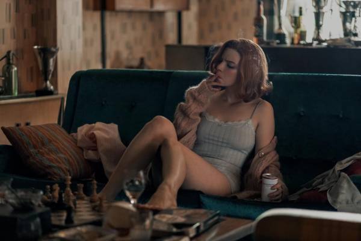

Зима 2021
Зима 2021

Увлекательный мир шахмат и опасные наркотики После автомобильной аварии, где погибает мать девочки, 9 летняя Элизабет Хармон попадает в приют. Детям под видом витаминок дают транквилизаторы, чтобы они были послушными. Однажды, спустившись в подвал, Бет застаёт уборщика за игрой в шахматы и происходящее её завораживает. Действие таблеток изменяет сознание девочки, теперь перед сном она видит на потолке воображаемую шахматную доску с фигурами на ней. Уборщик начинает обучать её правилам игры, а Элизабет продолжает эксперименты с пилюлями, глотая их сразу по несколько штук и разыгрывая на потолке вымышленные партии. В 15 лет Бет удочеряет супружеская пара. Хармон попадает на свой первый шахматный турнир в Кентукки и выигрывает главный приз, разгромив соперников так, что о ней написали в газете. Приёмная мать поняла, что на этом можно заработать и Бет начинает ездить по турнирам, одерживая победу одну за другой. О ней начинают говорить в шахматном мире, как об одарённом подростке. Мать злоупотребляет спиртным и успокоительным и приобщает Бет к алкоголю. К таблеткам добавляется ещё и выпивка, но это не мешает ей блестяще играть. Лишь одного игрока она боялась – это русский Василий Боргов. Теперь её цель – обыграть самого сильного шахматиста в мире